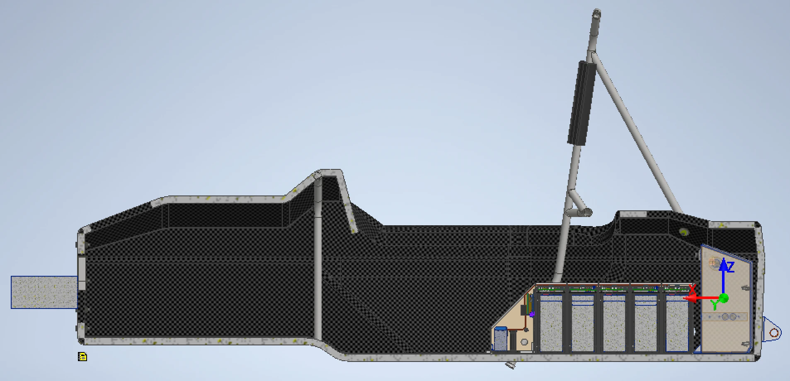
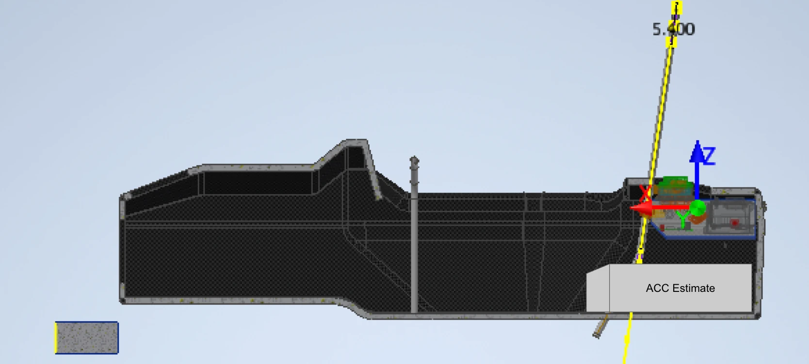
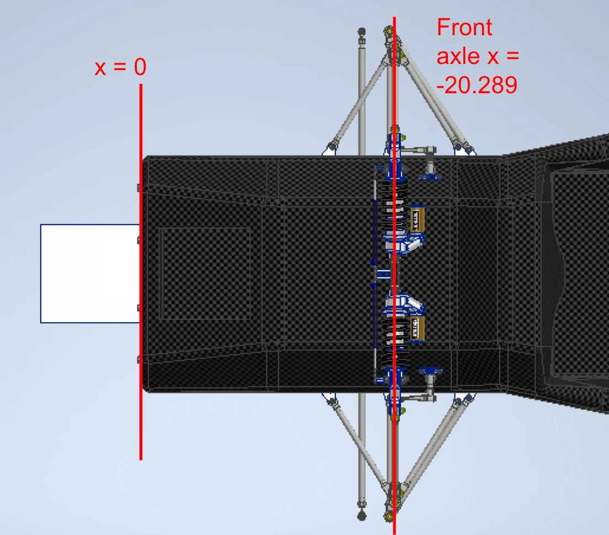
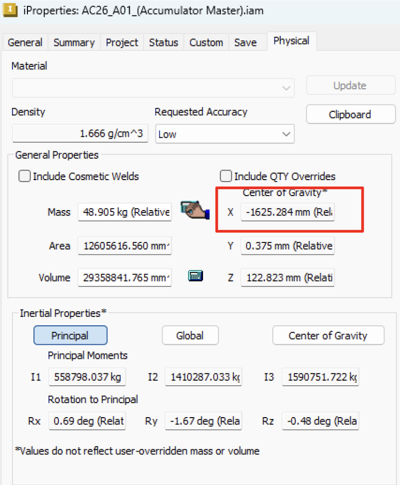
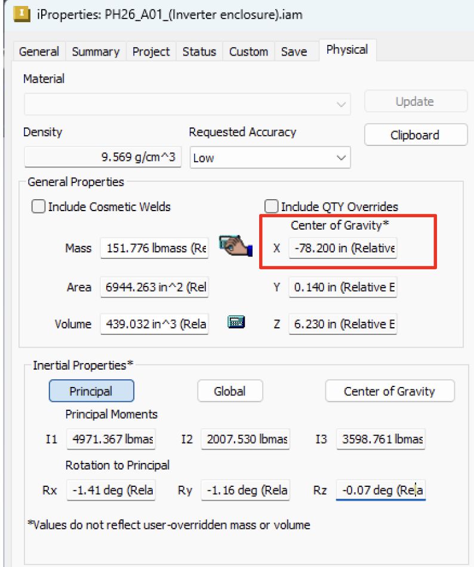
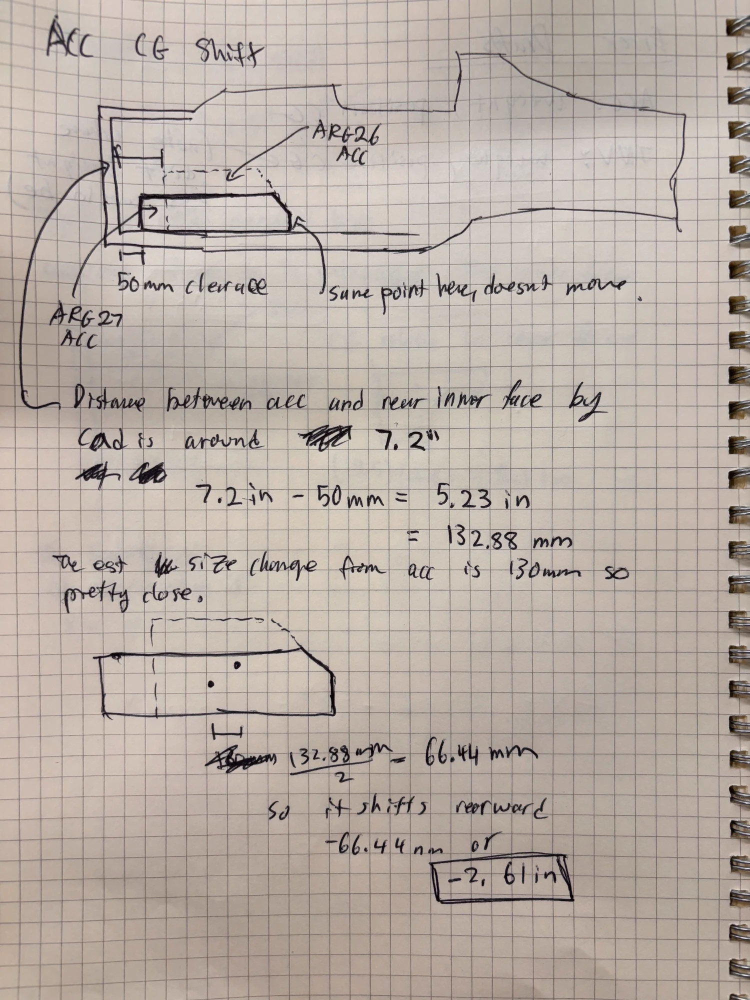
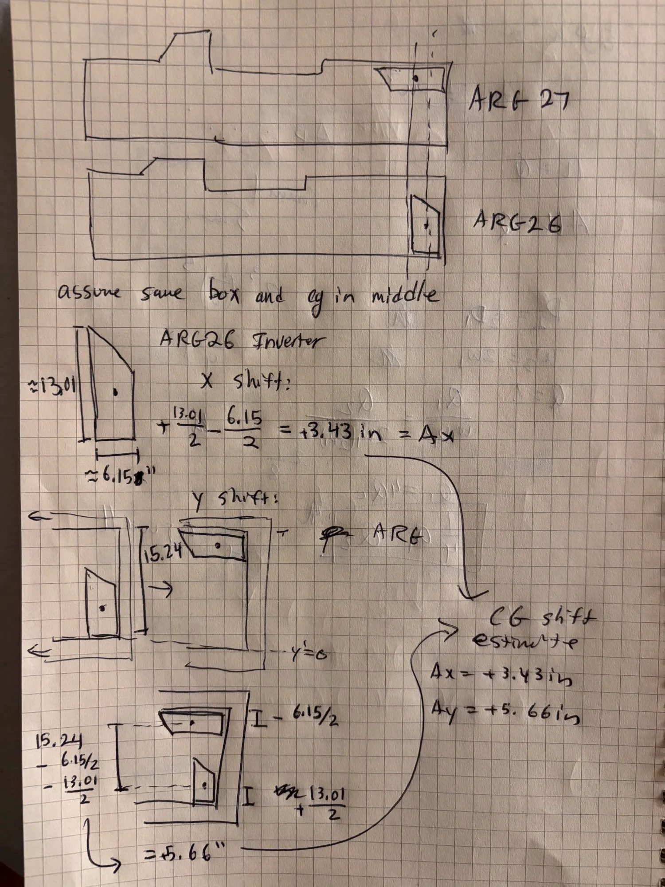
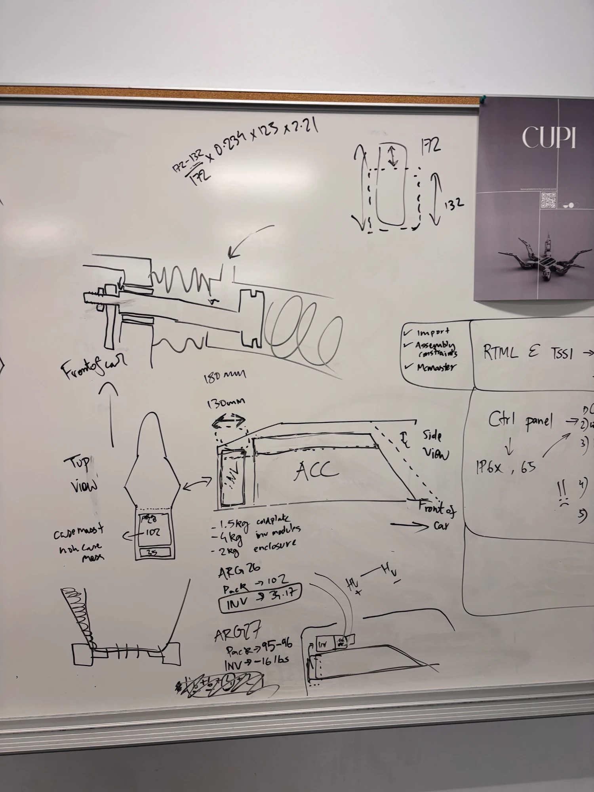
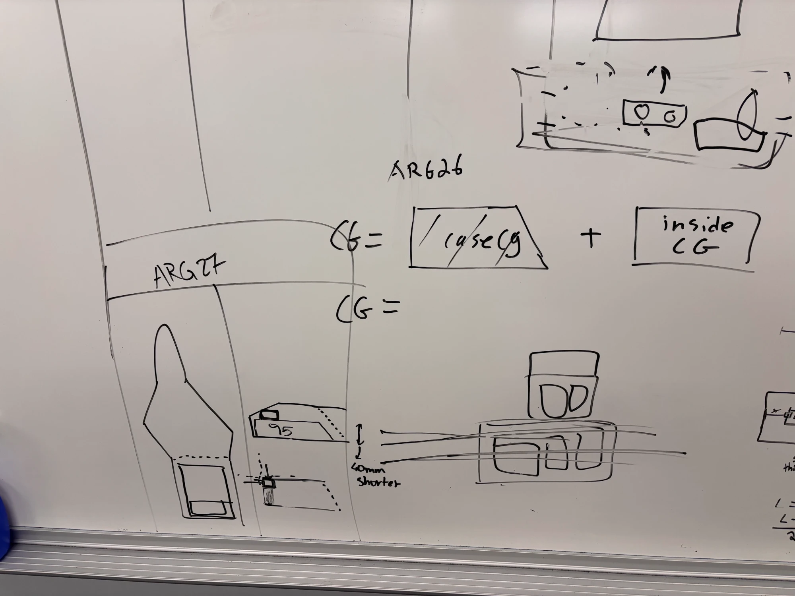

1Context
For ARG27, the accumulator and inverter are being moved and both are getting lighter. We design the car to a 50/50 weight distribution, so if the longitudinal (front to rear) CG moves, we may have to shift the wheelbase to bring it back. This page calculates that longitudinal CG shift.


2Methodology
Positions are x in vehicle coordinates, in inches, with +x pointing forward. All masses are sprung masses, so the ARG26 total (m26) is the total sprung mass of the car with the driver and x26 is its sprung CG. Everything other than the accumulator and inverter is lumped together as "other" and assumed to be the same on both cars.
2.1Remove the ARG26 Accumulator and Inverter
mother = m26 − mACC26 − mINV26
xother = (m26 x26 − mACC26 xACC26 − mINV26 xINV26) / mother
2.2Add the ARG27 Accumulator and Inverter
m27 = mother + mACC27 + mINV27
x27 = (mother xother + mACC27 xACC27 + mINV27 xINV27) / m27
2.3Longitudinal CG Shift
ΔxCG = x27 − x26
A positive shift means the CG moved forward.
2.4Effect on Weight Distribution
With wheelbase L, the shift moves this much of the weight onto the front axle:
Δ(front %) = 100 × ΔxCG / L
3Results
3.1Inputs
| Part | Mass (lb) | x (in) |
|---|---|---|
| ARG26 sprung mass with driver | 470 | −50.79 |
| ACC26 (accumulator) | 102 | −64.00 |
| INV26 (inverter) | 34.17 | −78.20 |
| ACC27 (accumulator) | 95 | −66.56 |
| INV27 (inverter) | 16.53 | −74.77 |
The ARG27 accumulator moves 2.56 in toward the rear, from x = −64.00 in to x = −66.56 in. The ARG27 inverter moves 3.43 in forward, from x = −78.20 in to x = −74.77 in. See the appendix for where each input comes from.
3.2Change in Each Part
| Part | Mass removed (lb) | x shift (in), + is forward |
|---|---|---|
| Accumulator | 7.00 | −2.56 |
| Inverter | 17.64 | +3.43 |
| Total | 24.64 |
3.3Calculation
Step 1, everything else on the car:
mother = 470 − 102 − 34.17 = 333.83 lb
xother = (470(−50.789) − 102(−64) − 34.17(−78.2)) / 333.83 = −43.947 in
Step 2, ARG27:
m27 = 333.83 + 95 + 16.53 = 445.36 lb
x27 = (333.83(−43.947) + 95(−66.56) + 16.53(−74.77)) / 445.36 = −49.915 in
Step 3, CG shift:
ΔxCG = −49.915 − (−50.789) = +0.87 in
The longitudinal CG moves 0.87 in forward. Moving the accumulator back pulls the CG rearward, but moving the inverter forward and taking 24.6 lb out of the two parts, which both sit behind the CG, has a bigger effect and pushes it forward.
3.4Effect on Weight Distribution
With the ARG26 wheelbase of 61 in, a 0.87 in forward shift moves about 1.4% of the weight onto the front axle:
Δ(front %) = 100 × 0.87 / 61 = 1.4%
So a car that was 50/50 would become about 51.4/48.6 front to rear.
4Remedy: Moving the Axles
For 50/50, the CG has to sit at the midpoint between the front and rear axles. Since the CG moves forward 0.87 in, we move both the front and rear axles forward 0.87 in. The midpoint moves with them, the car goes back to 50/50, and the wheelbase stays at 61 in.
AAppendix: Input Sources
| Input | Value | Source |
|---|---|---|
| ARG26 sprung mass with driver | 470 lb | To be filled out. |
| ARG26 sprung CG, x | −50.79 in | The car is designed to 50/50, so the CG is half the wheelbase behind the front axle: −20.289 − 61 × 0.5 = −50.789. Front axle location from CAD (Figure 3). |
| ACC26 mass | 102 lb | ARG26 weight budget, accumulator current weight of 46.266 kg (Figure 8). |
| ACC26 CG, x | −64.00 in | iProperties of the accumulator master assembly in CAD, −1625.284 mm (Figure 4). |
| INV26 mass | 34.17 lb | ARG26 weight budget, inverter current weight of 15.5 kg (Figure 9). |
| INV26 CG, x | −78.20 in | iProperties of the inverter enclosure assembly in CAD (Figure 5). |
| ACC27 mass | 95 lb | Estimate from Aryaman (HV lead). |
| ACC27 CG, x | −66.56 in | Rectangular approximation of the accumulator. The ARG27 case is longer, so its CG moves back by half the added length, 2.56 in, from the ACC26 CG (Figure 6). |
| INV27 mass | 16.53 lb | Estimate of 7.5 kg for the new inverter from Aryaman (HV lead). |
| INV27 CG, x | −74.77 in | Assumes the same enclosure with its CG in the middle, turned from standing up on ARG26 to lying flat on ARG27. The CG moves forward by half the height minus half the width, 13.01 / 2 − 6.15 / 2 = +3.43 in, from the INV26 CG (Figure 7). |
| Wheelbase, L | 61 in | From our design. Kept the same on ARG27. |








